Outside.in is a speculative mixed-use housing project developed while Jeremy was a student at the Illinois Institute of Technology. Located on Prairie Avenue across from H. H. Richardson's Glessner House, the project responds to the collision between Chicago's historic residential fabric, repetitive apartment towers, and newer suburban housing types.
The proposal uses the conventional 25-by-25-foot high-rise structural grid as infrastructure for a more varied residential community. Twenty-five unit layouts form horizontal neighborhoods, while fifteen townhouses become large voids within the building rather than detached objects. These voids bring daylight into a shared courtyard, frame views toward the city, lake, and park, and accommodate guest and community uses.
Retail, live-work space, parking, recreation, and residential programs combine within a 42-story framework. The work moves from contextual analysis through structural and programmatic assembly to unit variation, plans, and spatial renderings.

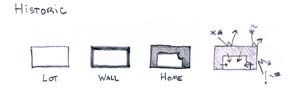
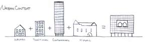
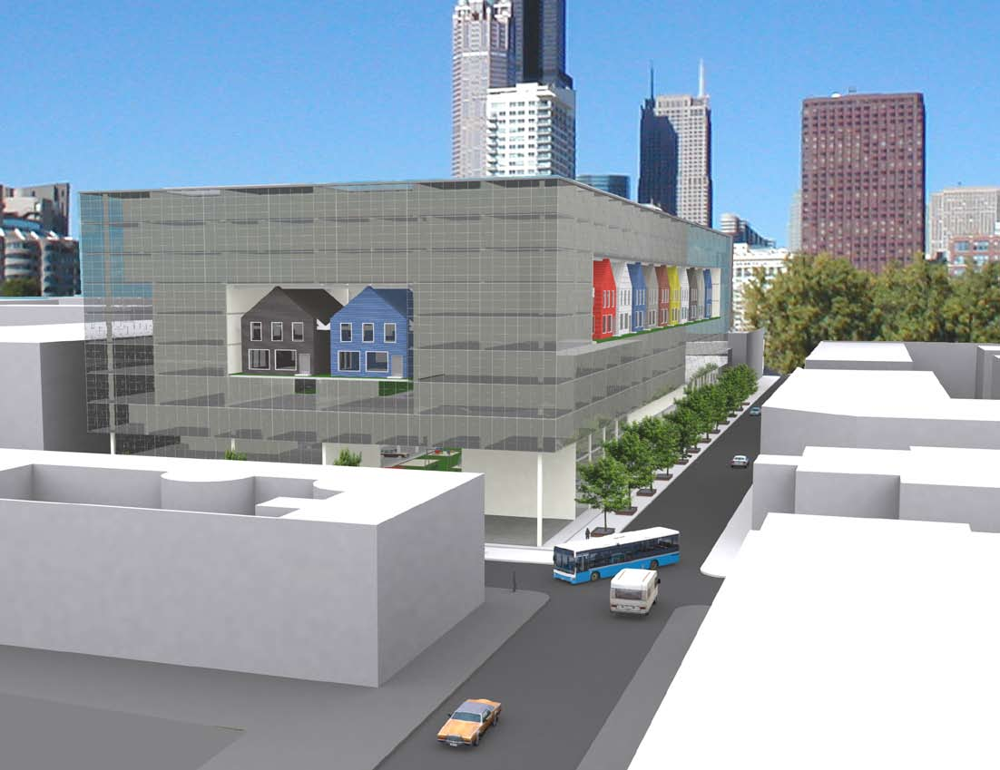
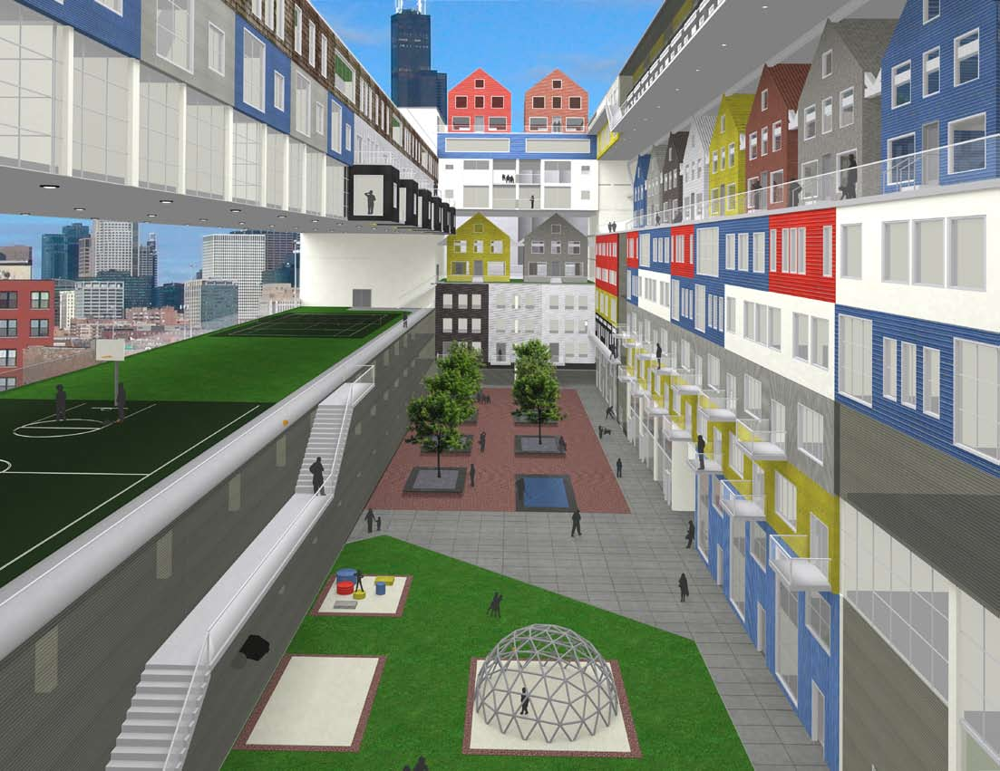
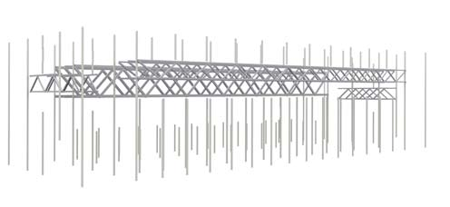
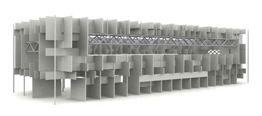
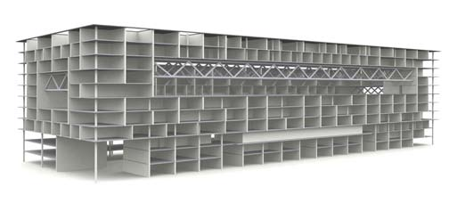
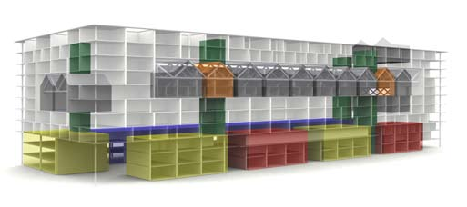
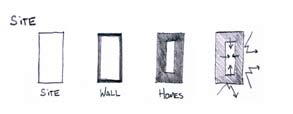
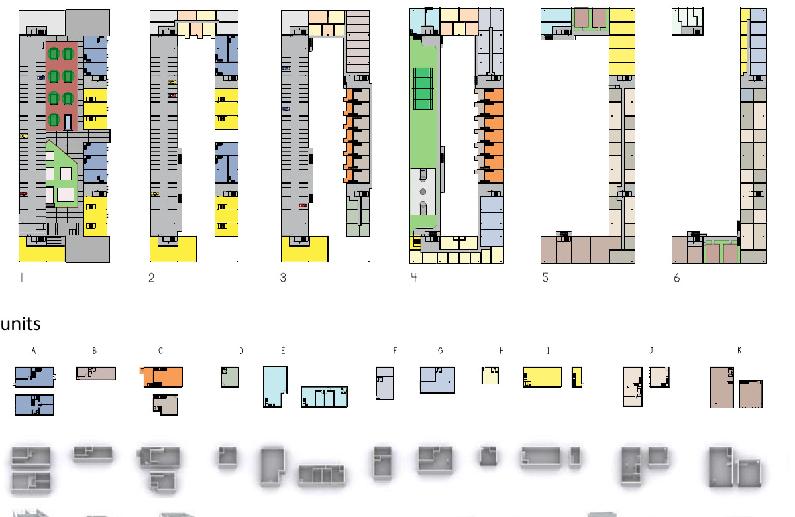
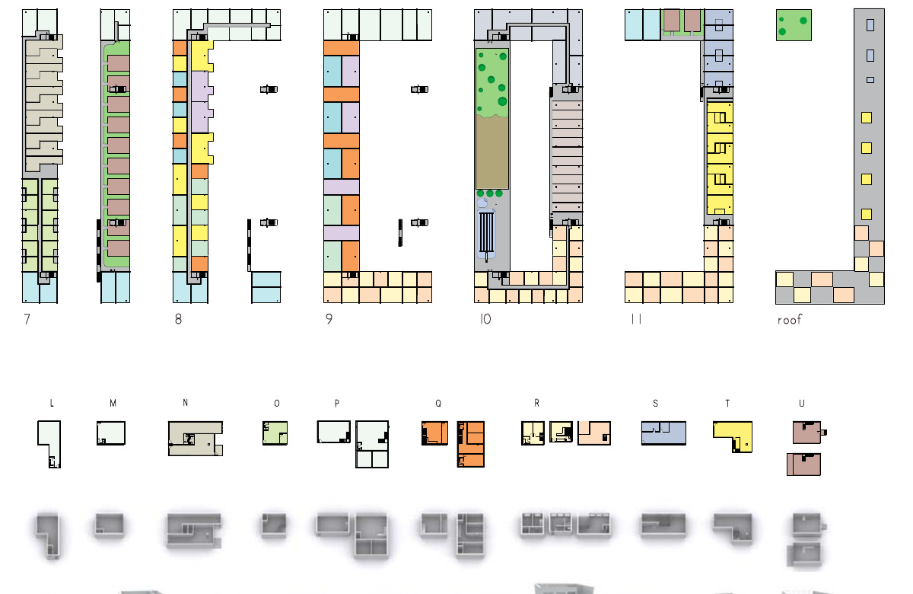